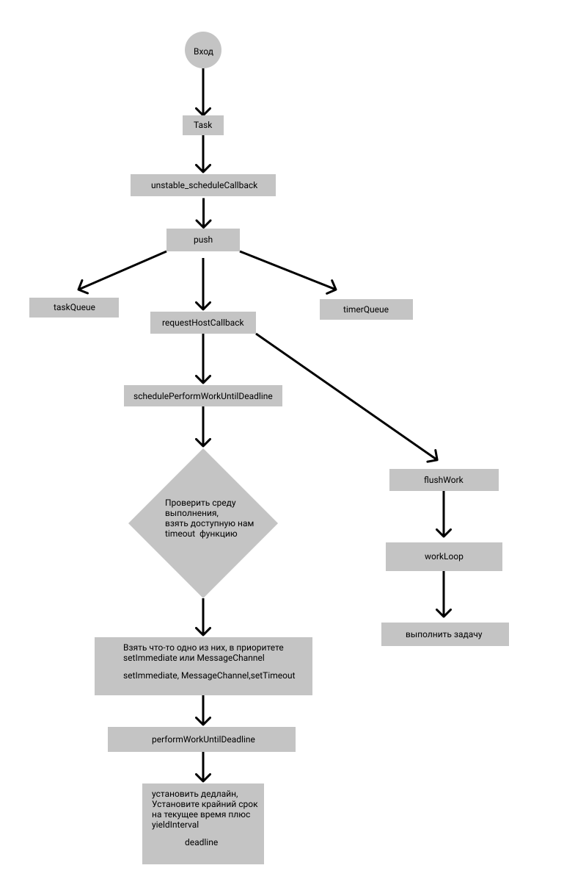
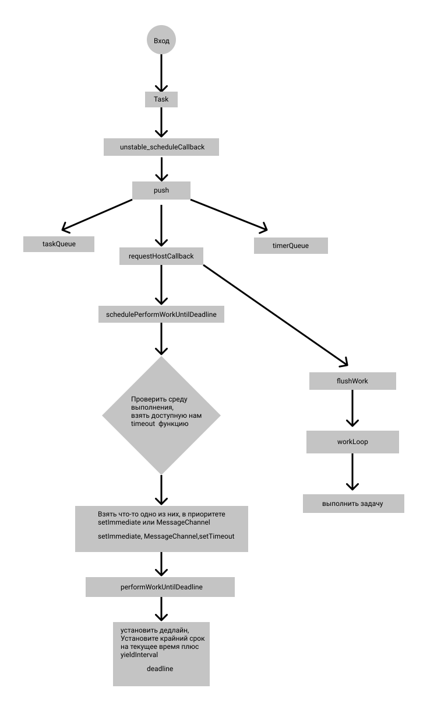

react-sheduler-explainer
Это система планирования, используемая внутри React, а основная функция входа - unstable_scheduleCallback. Ниже приведена блок-схема, подробное объяснение можно увидеть в коде. 
react-sheduler-explainerЭто система планирования, используемая внутри React, а основная функция входа - unstable_scheduleCallback. Ниже приведена блок-схема, подробное объяснение можно увидеть в коде. 